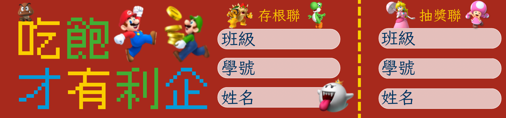
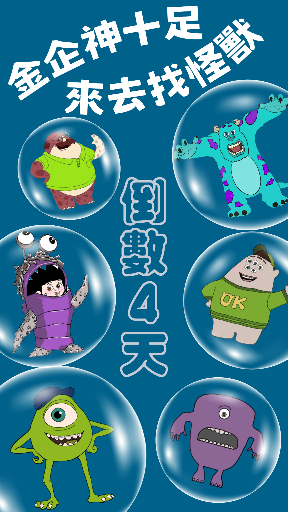

主視覺＋一段話介紹自己
林姿羽 Tzuyu Lin
「我細心、理性，對財務數據有高度敏感度，善於發掘數字背後的價值，
擅長財務分析與問題解決，致力於提供專業且精準的會計服務。」
我是一個對數字敏感、注重細節的人，
從小就對數學和金錢管理感興趣，也因此在五專期間特別喜歡會計學這門課程。
會計讓我發現數字不只是計算，而是企業運營的重要基礎。
我希望未來能進一步學習更專業的會計知識，掌握財務管理的核心能力，並運用在實務中。
我的目標是成為一名專業的會計師，
並開設自己的會計師事務所，為企業提供精準、高效的財務管理與顧問服務。
教育歷程
水源國小
2011.09-2017.06
- 水源國小國樂團 團員
建功高中附設國中部
2017.09-2020.06
- 建功高中國樂團 團員
國立臺北商業大學附設五專部 企業管理科
2020.09-now
- 國立台北商業大學企管科學會 美宣長
證照專區
全國技術士技能檢定
- 會計事務 丙檢技術士
TQC企業人才技能認證 辦公室應用軟體類
- PowerPoint 進階級
- Excel 進階級
- Word 進階級
- 中文輸入 進階級
- 雲端技術及網路服務 專業級
台灣行銷科學學會
- 初階行銷企劃證照
- 網路行銷證照
工作經驗
飲料店暑期工讀生
老賴茶棧 LIKE TEA SHOP
2020.06-2020.09
- 介紹及銷售飲品
- 門市收銀結帳
- 各式飲品調製
- 收班結帳
咖啡店暑期工讀生
路易莎咖啡股份有限公司 LOUISA COFFEE
2022.06-2022.08
- 咖啡及其他飲品調製
- 製作簡易餐點/輕食
- 結帳與收銀，整理現金收據
- 維護工作環境
- 咖啡豆及冲煮器具之專業介紹和銷售
- 定期盤點飲料與食材
門市專櫃銷售工讀生
小室瓶栽 EASY PLANT
2023.12-now
- 推廣銷售商品與推廣品牌
- 協助商品陳列及盤點上架
- 服務客戶諮詢商品以及售後服務項目
- 維持基本櫃位清潔
- 顧客購買或售後服務之紙本資料
- 相關線上表單填寫
未來規劃與計畫
短期目標
完成會計資訊系學業，考取會計證照、實習，以提升專業能力
中期目標
進入大型會計事務所，累積財務報表審計與稅務規劃經驗，熟悉企業財務運作。
長期目標
考取會計師資格，開設自己的會計事務所，提供企業財務管理與稅務規劃服務。
檔案作品集
設計作品集
畢業專題
國立臺北商業大學
企業管理科畢業專題

北商嘻研小城
北商第一屆嘻研社成發
碳行旅APP LOGO
使用於社會企業創業提案競賽計畫書
碳行旅執行圖
使用於社會企業創業提案競賽計畫書

第109屆企管科會
LOGO內部版
使用於科會群組頭貼及科服標誌
第109屆企管科會
LOGO外部版
使用於科會IG頭貼

吃飽才有利企
第109屆企業管理科學會迎新
⟪吃飽才有利企⟫名牌
為參加人員分組
並製作專屬名牌

⟪吃飽才有利企⟫抽獎券
晚會抽獎活動設計抽獎券
⟪吃飽才有利企⟫背景布
晚會活動主視覺背景
⟪吃飽才有利企⟫倒數封面圖
迎新reels倒數封面圖
金企神十足 來去找怪獸
第109屆企管科會與財金科會
聯合科遊

⟪金企神十足 來去找怪獸⟫
倒數封面圖
聯合科遊
reels倒數封面圖
⟪金企神十足 來去找怪獸⟫
贊助廠商圖
使用於感謝贊助廠商贊助聯合科遊
9想和你一起過聖誕
第109屆企管科會聖誕晚會
來企抽紅包年年分數高
第109屆企管科會
第一次期中送暖
⟪來企抽紅包年年分數高⟫
道具
在送暖的活動
用題詩的小卡為學弟妹加油打氣
粽所企待
第109屆企管科會
第二次期中送暖
當我們童在一企
第109屆企管科會
第一次期中送涼
企在來 桑一下
第109屆企管科會
第二次期中送涼